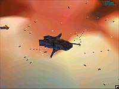

|
Between a Rock and a Hard Fan Base:
Designing a Mod-Friendly Game
Relic Entertainment's Falko Poiker, of Homeworld fame, speaks about the intricate process of designing mod friendly games.
by Falko Poiker
Introduction
Last year, when Relic released Homeworld to the masses, we were quickly lambasted by a segment of our fans for making the game very difficult to modify. Nowadays, many popular games are put together with various hooks to allow the more hardcore fans to create mods for the game. Mods increase the longevity of a game by allowing fans to create variations that keep the game fresh, and every now and then produce spin off games that are almost as popular, if not more popular, than the original game. The Counter-Strike mod for Half-Life is the most obvious example of a popular spin off of a popular game.
It was not our intention to hinder modders, it was simply difficult enough for us to create Homeworld, let alone make it mod friendly. I think that very few ground-breaking games are mod friendly -- even Doom, the first ground breaking mod friendly game that I can think of, was the technical follow up to Castle Wolfenstein. Despite our lack of effort, our fans have surprised us again and again by cracking our code and creating amazing variations of Homeworld. As of this writing, there are 21 mods for Homeworld and Cataclysm, including two Star Trek mods, a Babylon 5 mod, a Battlestar Galactica mod, and a Star Wars mod.
In making our new game (which I will call The Game from now on, since I cannot name it explicitly), the Homeworld team decided to create an engine from the ground up that will be modifiable in as many ways as possible. Making a mod friendly is not game overly hard, it just requires a commitment to do so from the beginning. Spending a year developing a game engine, then turning around and retrofitting modability into that engine is extremely difficult, if not impossible. Do it right from the start, and you're laughing.
Since AI programmers don't normally have a heck of a lot to do at the beginning of a development cycle (aside from design), I took on the task of setting up the scripting system for The Game. The scripting system would be one of the major steps in making the game easy to modify. As such, choosing the right language, and embedding it properly into The Game was an important task. In this article, I'd like to talk about game scripting and hopefully give a bit of an insight into some of the things that go into developing a game.
What is Scripting?

The majority of games are programmed using a compiled language such as c++ or c. The games are written in text files by the programmers, then another program translates these text files into very efficient (but nearly impossible to read) machine code that becomes the game's executable program. The computer doesn't have to read any text when it runs the game -- the entire game is in a format that it can understand.
A scripting language, on the other hand, is read in and translated as the game runs. The computer has to read, translate and execute the script file all at once (and every time the game runs). A good number of scripting languages do special things to speed up the read/translate/execute cycle, but this is essentially how scripts get run. Since scripts are read every time the program runs, they are called "interpreted" languages (think of a foreign language interpreter -- he listens, the repeats what he heard in a different language -- this is what a scripting system does for the CPU when it reads a game script).
Game Scripting
Scripting isn't only good for modability, it helps development as well -- even if the game developers have no intention of exposing the scripts to the public, those same developers would benefit greatly from building a good scripting system into their game. Scripts help make a game more data driven: instead of game properties and behaviors being hard coded into the game engine, scripts are used to define and modify those properties and behaviors. As a result, designers and artists can tweak how the game looks or works without needing to touch the executable itself. This is nothing new, but a surprising number of games still have many hard coded properties that could be put into scripts.
What a script does depends entirely on how it's implemented. Scripts can define the colors of objects in the game, what objects go in the game, how those objects behave, even how the game's artificial intelligence behaves. Some games even use scripts for their save game files. Homeworld had scripts that defined the game's default values (and there were many: colors, camera properties, ship flight dynamic properties, among others), and also had a scripting language for the single player AI, but the latter language was compiled into the game, so it wasn't visible to modders.
Scripting Languages

There are two paths to choose when creating a scripting system in a game. Either a proprietary language can be created and built from the ground up within the game -- Unreal Script is a good example of one of these -- or a publicly available scripting language can be embedded into the game engine. The Homeworld team realized that we had neither the manpower, nor the expertise to create a brand new language, so we decided to use a publicly available one. There are many scripting languages available: Perl, Python and lua are some examples, but there are many others. We spent a good amount of time researching the different languages available to us before deciding on lua.
A scripting language for our game had to meet certain specific requirements.
-
Ease of Use: The people who tend to work with scripts are designers and artists with little or no programming experience, so the scripting language should be relatively simple to use. This isn't so important for modability however, since most modders are good programmers. This requirement ruled out Perl, as it's syntax is extremely difficult to grasp for non-programmers (and even some programmers).
-
Speed: Games push the envelope in speed already, so a scripting language cannot be the weak link in the chain. We developers spend many hours trying to eke out performance out of our engines, so a scripting language that is slow is simply unacceptable because there's usually very little the game programmers can do to increase the performance of a slow scripting language. Most publicly available scripting languages are designed to be fast (though none are as fast as a compiled language like c++).
-
Size: Computer game executables tend to be bloated as they are. Adding a scripting system shouldn't increase the size of the executable by a whole lot. Lua is super small, so it was the ideal choice here -- it's tiny (the executable is 160 kb).
-
Well Documented: The more we know about a language, the better we can use all the features it has to offer. This is one of the downsides of lua, it's only documentation is it's reference manual, which though complete, is too short. Lua's code is also very sparsely documented, so it's hard to look into and analyze. Python would have been the better choice in this respect.
-
Flexibility: The more flexible a language is, the more we can modify the scripting language to work together with the specific demands of The Game, the more useful it will be to us and the mod groups. Lua has a very clean and flexible interface, so it was easily customized to our needs.
Scripting and AI
Since my specialty here at Relic is Artificial Intelligence, the most interesting aspect of scripting is what I can do with AI. The coolest feature of scripting stems from the fact that it is interpreted by the game, instead of compiled into its executable. While the game is running the AI scripts can be changed, and the game will react as soon as it reloads the changes. I'll literally be able to create the AI in the game while the game shows me instantly how changes I make affect the AI behavior. With an AI that's compiled into the game's executable (like Homeworld's computer and single-player games), every time a change is made the executable needs to be rebuilt, the game restarted, and replayed to a point where the AI uses the feature that we changed. This can take up a lot of time.
Have Scripts, Will Travel
Scripts alone will not make The Game a hit among the modding communities, but we hope that they (along with a few other fundamental designs we're implementing) will go a long way towards making The Game a joy for a wider range of people, including those who take pleasure in toying with The Game, rather than playing it.
|